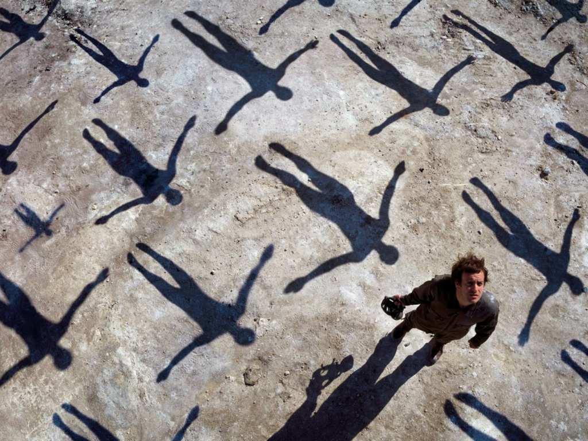

Muse
Muse es una banda británica de rock alternativo formada en 1994 Inglaterra. Desde su formación en la década de los 90, sus integrantes son: Matt Bellamy (compositor, voz, guitarra, teclados); Dominic Howard (batería, percusión); y Christopher Wolstenholme (bajo eléctrico, teclados, coros). Tras el lanzamiento Black Holes and Revelations, Morgan Nicholls comenzó a colaborar con la banda durante las presentaciones en vivo, haciéndose cargo de teclados, samples, de algunos coros, rara vez del bajo y últimamente de la segunda guitarra. La banda es conocida por sus extravagantes espectáculos en vivo, por fusionar géneros musicales como el rock alternativo, rock espacial, rock progresivo, rock sinfónico y electrónica, además por los atípicos interéses de Bellamy en la conspiración global, la revolución, la astrofísica, vida extraterrestre, pensamientos humanos y la idea de un fin del mundo simbólico; temas que se ven reflejados en sus letras.
Muse ha lanzado siete álbumes de estudio: Showbiz (1999), Origin of Symmetry (2001). Absolution (2003), Black Holes and Revelations (2006), The Resistance (2009), The 2nd Law (2012), Drones (2015) y Simulation Theory (2018).
También han publicado tres álbumes en vivo: Hullabaloo Soundtrack (2002), el cual también contiene una compilación de lados B; HAARP (2008), que documenta las presentaciones de la banda en el Estadio de Wembley en 2007; y Live at Rome Olympic Stadium (2013), una presentación de la banda ante más de 60 000 personas en Italia. Black Holes and Revelations le otorgó a Muse una nominación al Mercury Prize y un tercer lugar en la lista de sus mejores álbumes del año según la revista NME en 2006. Muse también ganó diversos premios a lo largo de su carrera, incluyendo cinco MTV Europe Music Awards, seis Q Awards, ocho NME Awards, dos Brit Awards (premio a la «mejor actuación británica en vivo» dos veces, un MTV Video Music Award, cuatro Kerrang! Awards y un American Music Award. También fueron nominados para cinco Premios Grammy, donde ganaron en la categoría mejor álbum de rock en 2011, por su quinto álbum de estudio The Resistance (2009), siendo también ganadores del mismo premio por Drones en el 2015. Para junio de 2016 han vendido más de 20 millones de álbumes en todo el mundo.
Formación y primeros años

Los miembros de Muse se desempeñaron en diferentes bandas durante su estancia en Teignmouth Community College y Coombeshead College a principios de 1990. Matt Bellamy tocaba en una banda llamada Carnage Mayhem y Dominic Howard en Gothic Plague. Ambos asistían al mismo colegio y se hicieron amigos. Para diciembre de 1992, Bellamy abandonó su banda por pensar que «no era tan cool como la de Dominic», al mismo tiempo, Howard le pidió reemplazar al guitarrista que había abandonado. Tiempo después y tras varios cambios en la banda (la salida del vocalista y otros miembros) le pidieron a Chris Wolstenholme que aprendiera a tocar el bajo para unírseles. Wolstenholme estuvo de acuerdo y tomó lecciones. En 1994, el grupo, bajo el nombre Rocket Baby Dolls y con una imagen goth/glam, ganó una competencia de bandas locales, destrozando a sus equipos en el proceso. «Se suponía que iba a ser una protesta, una declaración», dijo Bellamy, «así que, cuando realmente ganamos, fue una verdadera sorpresa, una enorme conmoción. Después de eso comenzamos a tomarnos en serio a nosotros mismos». Poco después, los tres decidieron renunciar a la universidad, dejar sus puestos de trabajo, cambiaron el nombre de la banda a Muse (1994-1995), y alejarse de Teignmouth.
A pesar del éxito de su segundo EP, las compañías discográficas británicas se mostraron reticentes a contratar a Muse. Fue después de un viaje al Festival CMJ de Nueva York, un sello discográfico de Estados Unidos los llevó a Los Ángeles para mostrarlos. Nanci Walker, entonces Sra. Directora de A&R de Columbia Records, llevó a Muse a los Estados Unidos para presentarse ante el entonces Vicepresidente Senior de A&R de Columbia, Tim Devine, así como ante el productor estadounidense Rick Rubin. Fue durante este viaje, el 24 de diciembre de 1998, que Muse firmó un acuerdo con Maverick Records. A su regreso de América, Taste Media arregló contratos de Muse con diversos sellos discográficos en Europa y Australia, que les permitió mantener el control sobre su carrera en los distintos países. John Leckie produjo el primer disco de la banda, Showbiz. El álbum mostró el estilo suave de la banda, y las letras hacen referencia a las relaciones humanas y las dificultades que habían encontrado al tratar de establecerse en Teignmouth. El lanzamiento de este álbum fue seguido por giras como teloneros de Red Hot Chili Peppers y Foo Fighters en los Estados Unidos.
Albums
Origin of Symmetry

El segundo álbum de la banda, Origin of Symmetry, nuevamente producido por Leckie, resultó ser un sonido más pesado y oscuro, con el bajo distorsionado o sintetizado, a veces utilizando técnicas clásicas en canciones como «Space Dementia». La banda experimentó con instrumentos poco ortodoxos, como el órgano de iglesia, el mellotron, y una batería aún más completa. La voz de Matt Bellamy aparecía empleada en su máximo esplendor, guitarras con arpegios y una mayor utilización del piano que en el disco anterior, inspirado en pianistas románticos y posrománticos, especialmente los rusos Tchaikovski y Rajmáninov. También es notable la influencia de minimalistas como Philip Glass. Bellamy también citó como influencias a Jimi Hendrix y Tom Morello (de Audioslave y Rage Against the Machine), este último evidente en las canciones más basadas en riffs, y en el extensivo uso del cambio de tono en los solos de guitarra. El disco también contiene una versión de «Feeling Good», de Anthony Newley y Leslie Bricusse.
Maverick no se vio muy a gusto con el estilo vocal de Bellamy en el álbum, ya que no lo consideraban amigable para la radio, por lo que le pidieron a la banda cambiar algunas de las canciones antes de lanzar el álbum en Estados Unidos. Muse se negó y dejó el sello discográfico; no obstante, Maverick tomo la decisión de no publicar Origin of Symmetry en los Estados Unidos. No fue hasta 2005, que Muse firmó con Warner Bros. Records y el disco se logró publicar en dicho país. Por otra parte, el material contó con una buena recepción crítica; Tyler Fisher de Sputnikmusic le dio cinco de cinco estrellas y comentó que es un disco «agresivo y virtuoso».
Absolution
Después de pasar grabando en estudios de los Estados Unidos y el Reino Unido durante 2002 y 2003, Muse lanzó su tercer álbum de estudio, Absolution, en septiembre de 2003. Producido por Rich Costey, Paul Reeve y John Cornfield, Muse continuó mezclando influencias clásicas y su estilo pesado, especialmente en canciones como «Butterflies and Hurricanes». La banda ha hecho referencias a un tema general en el disco: las cosas llegando a su fin y las reacciones a esta situación.11 Las letras abarcan temas como el miedo, la desconfianza, la realización personal y la alegría.11 Bellamy también declaró que la entrada del Reino Unido en la Guerra de Irak tuvo una gran influencia sobre su composición.11
El mismo recibió una buena recepción comercial; debutó en el primer puesto en el Reino Unido, lo que lo convirtió en el primer número uno de la banda en dicho país. También consiguió entrar en el las listas de los primeros diez en países como Francia, Italia, Austria, Suiza, entre otros. El primer sencillo del disco, «Time Is Running Out», alcanzó el puesto número ocho en la lista UK Singles Chart, mientras que «Hysteria», «Sing for Absolution» y «Butterflies & Hurricanes» consiguieron entrar dentro de las primeras veinte posiciones. Para promocionar el disco, extrajeron otros dos sencillos, «Stockholm Syndrome» y «Apocalypse Please». No obstante, y tras su gran éxito, el material logró la certificación de tres discos de platino por parte de la Industria Fonográfica Británica, mientras que en Canadá y Estados Unidos lo acreditaron con un disco de oro. Absolution también obtuvo una muy buena respuesta por parte de los críticos musicales; Andrew Future de Drowned In Sound dijo que «con su tercer álbum de estudio, han creado una obra verdaderamente elemental», mientras que Alan Ranta de Tiny Mix Tapes comentó que «es una emocional, filosófica, sofisticada, poética y hermosa pieza de rock que hace a esto patético planeta orgulloso».
Black Holes and Revelations

Después de unos meses de descanso, la banda regresó a los estudios de grabación en agosto de 2005. El nuevo disco fue producido nuevamente por Costey y fue titulado Black Holes and Revelations. El álbum salió a la luz en el mercado europeo el 3 de julio de 2006, aunque en Japón fue lanzado el 28 de junio, con la pista extra Glorious. El disco fue el mayor éxito comercial de la banda, pero se distanció bastante de sus trabajos anteriores por incluir el sonido electrónico mucho más en sus composiciones, lo que fue mal recibido por algunos críticos y seguidores.
La gira comenzó el 13 de mayo, con apariciones en radio y televisión. Sin embargo, la gira europea comenzó en Barakaldo; seguido por conciertos en Madrid, Badalona y Lisboa. Seguidamente hubo una recordada actuación en el Reading Festival. El 4 de diciembre de 2006, Muse anunció que actuarían en un concierto en el renovado estadio de Wembley, con una capacidad aproximada de 70 000 personas, el 16 de junio de 2007. Debido a la rápida venta de todas las entradas, se anunció un segundo concierto en el mismo recinto el 17 de junio.
The Resistance

Las grabaciones para el quinto álbum de estudio comenzaron el 2 de febrero de 2009. En una entrevista con la BBC, Bellamy comentó que el álbum mostraría distintas influencias clásicas, y que estaría «muy orquestado».26 En la edición de febrero de la revista juvenil australiana jMag, publicada por la emisora de radio Triple J, se informó que Bellamy había anunciado en el foro de la banda que había compuesto la «más pesada de todas». Declaró: «Hay una nueva canción en tres partes, en la que estuve trabajando esporádicamente durante años. Puesto que un gran porcentaje de la composición es orquestal... Estuve arreglando los elementos orquestales yo mismo, lo que está llevando mucho tiempo».
El 24 de marzo de 2009, se anunció en el sitio web de la banda que se iniciaría una nueva gira en otoño en el Reino Unido, Europa y América del Norte. También se declaró que la banda sería la invitada especial en varios de los conciertos que realizará U2 en América del Norte a lo largo de septiembre. El 1 de junio se confirmaron 30 conciertos en Europa. La gira europea comenzó el 30 de octubre en el Hartwall Arena de Finlandia y finalizó el 4 de diciembre en el PalaOlimpico de Turín, Italia. Las 95,000 entradas de la gira se vendieron en pocos minutos desde su puesta en venta el 9 de junio. El 22 de mayo la banda anunció que el título del quinto álbum sería The Resistance y más tarde, el 16 de junio, confirmaron que la fecha de lanzamiento sería el 14 de septiembre de 2009. Para el 3 de julio, ya se habían dado a conocer las canciones que formarían el álbum, a través de actualizaciones continuas en el Twitter oficial de la banda.
The 2nd Law

En octubre de 2011, el trío británico volvió a los estudios en Londres para grabar su sexto álbum, el que fue seguido, al igual que el disco anterior vía redes sociales como Twitter, Youtube y la página oficial del grupo. Se estrenó una primicia del disco en junio del 2012 que preveía el nuevo sonido de la banda, además del sencillo "Survival", que fue la canción oficial de los Juegos Olímpicos de Londres 2012, y que se estrenó y puso a la venta en la Radio 1 de la BBC el 27 de junio. Howard dijo acerca de las composiciones: «[Bellamy] Me mostró algunas cosas que ha compuesto y suena más soft rock, pero luego con la banda seguro endurecemos el sonido». A priori The 2nd Law tenía previsto su lanzamiento para el 17 y 18 de septiembre de 2012, pero luego se concretizó el 1 y 2 de octubre como fechas de lanzamiento y se estatizó que su sonido sería un poco más suave que el de los de anteriores lanzamientos.
En The 2nd Law se destaca un claro punto de inflexión en el sonido de la banda respecto de sus trabajos anteriores, reflejándose en la voz de Matthew Bellamy, las composiciones de Chris Wolstenholme, en donde es el cantante principal, y la amplia gama de estilos que abarca, estrenando un sonido dubstep en canciones como Follow Me o Unsustainable, o el estilo funk en Panic Station. Esto dio pie a una recepción muy dividida del público de opiniones positivas y negativas y, entre aquellas negativas, alegaban que habían perdido la esencia de lo que eran antes. Si bien la banda hizo caso omiso ante el éxito del disco, Matthew Bellamy dijo en una entrevista que «estaba decepcionado» con el trabajo realizado en The 2nd Law.
Drones
Después de revelar algunos detalles sobre los planes que tienen para su 7º álbum de estudio, la banda oficialmente inició su grabación el día 3 de octubre del 2014, información revelada gracias a una fotografía que Dominic Howard subió a su instagram personal, seguido por una fotografía en la cuenta oficial de instagram de la banda titulada "Day 1" (Día 1), en la que se puede ver a sus tres integrantes en el estudio de grabación.
En su página oficial la banda invita a sus fans a seguirlos en Instagram, red en la que continuamente estarán mostrando imágenes de los avances del proceso de grabación del nuevo material, que será lanzado en el año 2015. En uno de sus recientes vídeos en Instagram se alcanzaba a ver que el nombre del nuevo material sería Drones, unos días después la banda lo confirmó.
Tras varios meses de noticias a cuentagotas y pequeñas muestras a través de Instagram, el 12 de marzo de 2015 se publica oficialmente un adelanto del nuevo disco, la canción Psycho, que llamará la atención por la vuelta del grupo a un riff pesado y, sobre todo, por el uso de un vocabulario fuerte. Además la banda confirma en su página web que el primer sencillo, llamado Dead Inside, verá la luz el 23 de marzo, y el disco completo Drones el 8 de junio en Reino Unido, un día más tarde en el resto del mundo. El 28 de abril publicaron el vídeo oficial del primer sencillo, Dead inside, considerado uno de los mejores últimos videoclips de la banda británica.
En febrero de 2016, Muse ganó el premio Grammy en la categoría "Mejor álbum de rock".
Simulation Theory

Simulation Theory es el octavo álbum de estudio de la banda de rock inglesa Muse . Fue lanzado el 9 de noviembre de 2018 a través de Warner Bros. Records y Helium-3 . Muse coprodujo el álbum con Rich Costey , Mike Elizondo , Shellback y Timbaland . Siguiendo los temas más oscuros de los álbumes anteriores de Muse, Simulation Theory incorpora influencias más ligeras de la ciencia ficción y la cultura pop de la década de 1980, con un amplio uso de sintetizadores. El clima político contemporáneo de los Estados Unidos informó la letra.
En lugar de trabajar en el álbum como un todo, Muse se centró en grabar una sola pista a la vez. La grabación comenzó en AIR Studios en Londres a principios de 2017 con Elizondo, antes de embarcarse en una gira por América del Norte. La producción se reinició en Los Ángeles a fines de 2017 con Costey, quien anteriormente produjo los álbumes Absolution (2003) y Black Holes and Revelations (2006) de Muse .
La portada del álbum , diseñada por el artista de Stranger Things , Kyle Lambert , y sus videos musicales rinden homenaje a la cultura pop de la década de 1980, como Back to the Future , Thriller de Michael Jackson y Teen Wolf . Simulation Theory fue precedida por el lanzamiento de los sencillos " Dig Down ", " Thought Contagion ", " Something Human ", "The Dark Side" y " Pressure ", junto con una gira de festivales en 2018 por América del Norte. Fue lanzado en una edición estándar junto con dos ediciones de lujo con versiones alternativas de sus pistas. ALa gira mundial por América del Norte, Europa y América del Sur se llevó a cabo en 2019 para apoyar el álbum. El álbum recibió críticas generalmente variadas. Una película basada en el álbum y la gira, Muse - Simulation Theory , se lanzó en agosto de 2020.